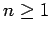

Inhalt Index DeskTop Bronstein

 Funktionen und ihre Darstellung Zyklometrische Funktionen (Arkusfunktionen)
Funktionen und ihre Darstellung Zyklometrische Funktionen (Arkusfunktionen)


| (2.150a) |
| (2.150b) |
| (2.150c) |
| (2.151a) |
| (2.151b) |
| (2.152a) |
| (2.152b) |
| (2.152c) |
| (2.153) |
wobei  auch gebrochene Werte annehmen kann und Tn(x) über die Gleichung
| (2.154) |
bestimmt ist. Für ganzzahliges n ist Tn(x) ein Polynom in x (ein TSCHEBYSCHEFFsches Polynom). Wegen der Eigenschaften der TSCHEBYSCHEFFschen Polynome s. TSCHEBYSCHEFF-Approximation.